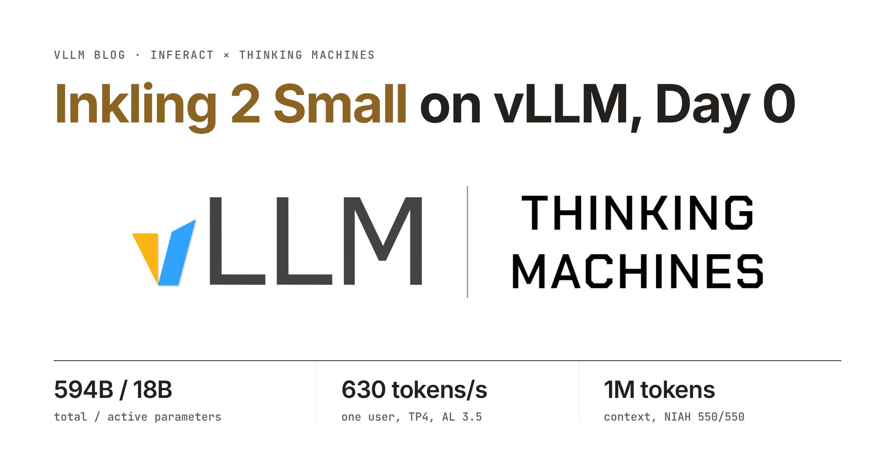
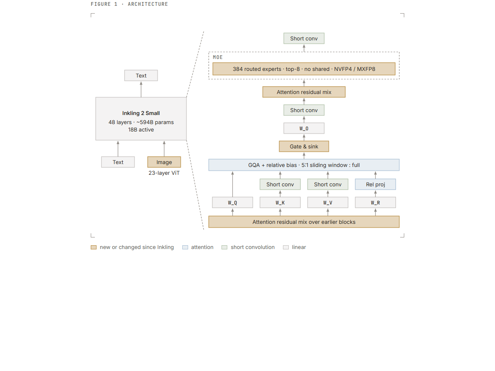
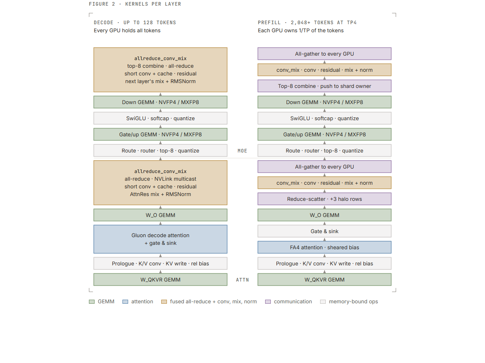

Inkling 2 Small 登陆 vLLM：首日支持

vLLM 在首日即支持 Thinking Machines 的 Inkling 2 Small。这是一个文本与视觉多模态 MoE 模型，总参数量 594B、激活参数量 17B，上下文最长 100 万 token。模型还自带原生 DSpark 推测器。vLLM 为其提供优化后的性能（TP4、接受长度 3.5 时，单用户最高 630 TPS），同时支持 LoRA。
要点速览
- 总参数 594B、激活参数 17B、100 万 token 上下文。 48 层 MoE、384 个专家（top-8），输入图像和文本，输出文本。
- 相较 Inkling 的架构升级。 加入块注意力残差（Block Attention Residuals）、注意力汇聚点（attention sink）、门控注意力和 ViT 图像编码器。
- 混合精度 MoE。 第 0–39 层使用 NVFP4，第 40–47 层使用 MXFP8，因此单节点即可部署模型。
- 原生 DSpark 推测器。 带 RNN 头的 DSpark 每步草拟 7 个 token。
- 广泛优化。 采用内核融合、PDL、高度调优的 Gluon 注意力内核和序列并行；在 GB200 上使用 TP4、接受长度 3.5 时，单用户最高达到 630 TPS。
- RL 与 LoRA 支持。 vLLM 支持该模型的强化学习（通过 SkyRL）和 LoRA。
可以用以下命令启动服务：
vllm serve thinkingmachines/Inkling-2-Small \
--tensor-parallel-size 8 \
--reasoning-parser inkling --tool-call-parser inkling --enable-auto-tool-choice \
--speculative-config '{"method":"dspark","num_speculative_tokens":7,"draft_sample_method":"probabilistic"}'
模型架构

图 1：Inkling 2 Small 架构。金色表示相较 Inkling 新增或改变的部分。
| 项目 | Inkling | Inkling 2 Small |
|---|---|---|
| 层数 | 66（55 个滑动窗口层 + 11 个全注意力层） | 48（40 个滑动窗口层 + 8 个全注意力层） |
| 残差路径 | 残差流 | 块注意力残差（8 个块，每块 6 层） |
| 注意力 | 带相对偏置的 GQA，不使用 RoPE | 相同 |
| 头数（query / KV） | 全注意力 64 / 8，滑动窗口 64 / 16 | 所有层均为 48 / 8 |
| 滑动窗口 | 512 | 1,024 |
| 注意力输出 | 普通输出 | sigmoid 门控和逐 token sink |
| 短卷积 | 每层 4 个（K、V、注意力输出、MLP 输出），卷积核大小 4 | 相同 |
| MoE | 256 个路由专家（top-6）+ 2 个共享专家 sink；前 2 层为稠密层 | 384 个路由专家（top-8），无共享专家，所有层均为 MoE |
| 专家精度 | NVFP4 | 第 0–39 层 NVFP4，第 40–47 层 MXFP8 |
| 模态 | 文本、图像、音频输入；文本输出 | 文本、图像输入；文本输出 |
| 图像编码器 | 4 层 hMLP，40×40 patch | 23 层 ViT（宽度 1,024），20×20 patch |
| 推测解码 | 8 个串联 MTP 头 | DSpark 草拟模型，每步 7 个 token |
Inkling 骨干 + 近期架构进展。 Inkling 2 Small 保留 Inkling 的骨干：滑动窗口与全注意力按 5:1 混合；GQA 使用学习到的相对偏置而非 RoPE；每层包含四个短卷积，并使用 sigmoid 路由 MoE。在此基础上，它加入了近期进展。块注意力残差替代传统残差流：每个子层之前，一个学习到的 query 会混合先前各 6 层块的输出。门控注意力在每个头的输出上加入 sigmoid 门控，并配合逐 token 的注意力 sink。图像编码器也由 hMLP 换成 23 层 ViT。
采用 Four-Over-Six NVFP4 的混合精度 MoE。 Inkling 2 Small 的 48 层中，前 40 层专家使用 NVFP4，后 8 层使用 MXFP8。NVFP4 激活使用逐 token 全局缩放和双候选块缩放（Four Over Six）：对于每个 16 元素块，量化器分别尝试把块最大值缩放到 6 和 4，并保留重建误差（MAE）更低的方案。
带 RNN 头的 DSpark 推测器。 检查点使用 DSpark 草拟模型替代 Inkling 的 8 个串联 MTP 头。推测器包含 5 层，每步草拟 7 个 token；其 head 采用 DeepSeek DSpark 论文介绍的 RNN 变体。
vLLM 集成与优化

图 2：一个解码器层在解码和大规模预填充中的内核。
内核融合与 PDL。 vLLM 把子层之间的集合通信与内存带宽受限操作积极融合为单个内核。使用注意力残差后，每个边界都需要一次 all-reduce、一次短卷积、一次残差更新、一次注意力残差混合和一次 RMSNorm，也就是对同一组隐藏状态执行五个内存受限步骤。融合内核 allreduce_conv_mix（图 2 金色部分）通过 NVLink multicast 执行 all-reduce，并将其后的全部操作保留在寄存器中。GEMM、注意力、路由和激活内核使用程序化依赖启动（programmatic dependent launch，PDL），让每个内核的 prologue 与前一内核的尾部重叠；在小批量下，解码步骤由一长串短内核组成，这项优化尤其重要。
融合激活量化的 MoE。 vLLM 在生成专家激活的内核内部直接完成量化（每层按其精度使用 NVFP4 或 MXFP8），因此不需要单独的量化过程再次读写隐藏状态。路由内核会在 gate/up projection 前量化 token，带 softcap 的 SwiGLU 则在 down projection 前量化输出。专家 GEMM 使用 FlashInfer 随附的 TensorRT-LLM batched-GEMM 内核。
预填充序列并行。 普通张量并行在每次 all-reduce 后，会让每张 GPU 对全部 token 重复执行短卷积、注意力残差混合和 RMSNorm。这在解码中代价不高，在预填充中却很昂贵。vLLM 用序列并行消除重复（图 2 紫色和金色部分）：每张 GPU 执行 reduce-scatter，仅在自己的 token 分片上由融合 conv_mix 内核完成短卷积、残差更新、注意力残差混合和 RMSNorm，然后 all-gather 结果供下一个 GEMM 使用。TP4 下，8K-token 预填充步骤缩短 22%；TP8 下缩短 26%，并为每张 GPU 的 KV 缓存释放 1.3–1.9 GiB。
为解码优化的 Gluon 相对注意力内核。 Inkling 的 FlashAttention-4 解码路径在 Inkling 2 Small 上较慢，因为 6:1 的 GQA 比例会静默禁用 GQA packing。为此，我们为解码和验证编写了 warp-specialized Gluon 内核，把 6 个头打包为一个 64 行 tile，并只读取一次 KV：一个 TMA warp 流式读取 KV，一个 tcgen05 warp 执行 MMA，四个 softmax warp 应用相对偏置。在 100K 上下文、batch 1 时，一个解码步骤由 15.1 ms 降到 4.8 ms。预填充仍使用 Inkling 的 sheared-bias FlashAttention-4 路径。
性能
我们在 TP8（两个 4-GPU 节点）上，以 DSpark 概率式草拟和前缀缓存测试 Inkling 2 Small 的智能体工作负载。每个会话保留长上下文，每轮追加上一轮回答和约 2K-token 的工具输出，因此每轮只有约 3K 个新 token；随后在 temperature 1.0、开启推理的情况下生成 1,024 个 token。下表给出在单用户获得 100 tok/s 时对应并发量下的每 GPU 输出吞吐。
| 会话上下文 | 单用户 100 tok/s 时每 GPU 输出 tok/s | 并发会话数 | 前缀缓存命中率 | 接受长度 |
|---|---|---|---|---|
| 32K | 约 1,070 | 约 84 | 91% | 3.3 |
| 64K | 约 915 | 约 72 | 95% | 3.4 |
| 128K | 约 700 | 约 55 | 98% | 3.5 |
| 256K | 约 450 | 约 37 | 99% | 3.5 |
TP4 下，单用户解码速度约为 630 tok/s，接受长度为 3.5。
准确率评估
vLLM 保持参考实现的数值行为：每一步使用相同数据类型，注意力输出和路由器使用 FP32，并使用相同的 NVFP4/MXFP8 激活量化；差异仅来自规约顺序和 all-reduce 的 BF16 部分和。我们使用 inkling-verify，在启用 DSpark 的情况下，对最长 100 万 token 的 NIAH、MMMU-Pro 和 HLE 进行端到端验证；得分与不使用推测解码的运行一致。
致谢
感谢 Thinking Machines 团队在将 Inkling 2 Small 集成并优化到 vLLM 过程中的密切合作。这项工作由 Aurick Qiao（Thinking Machines）和 Woosuk Kwon（Inferact）牵头。